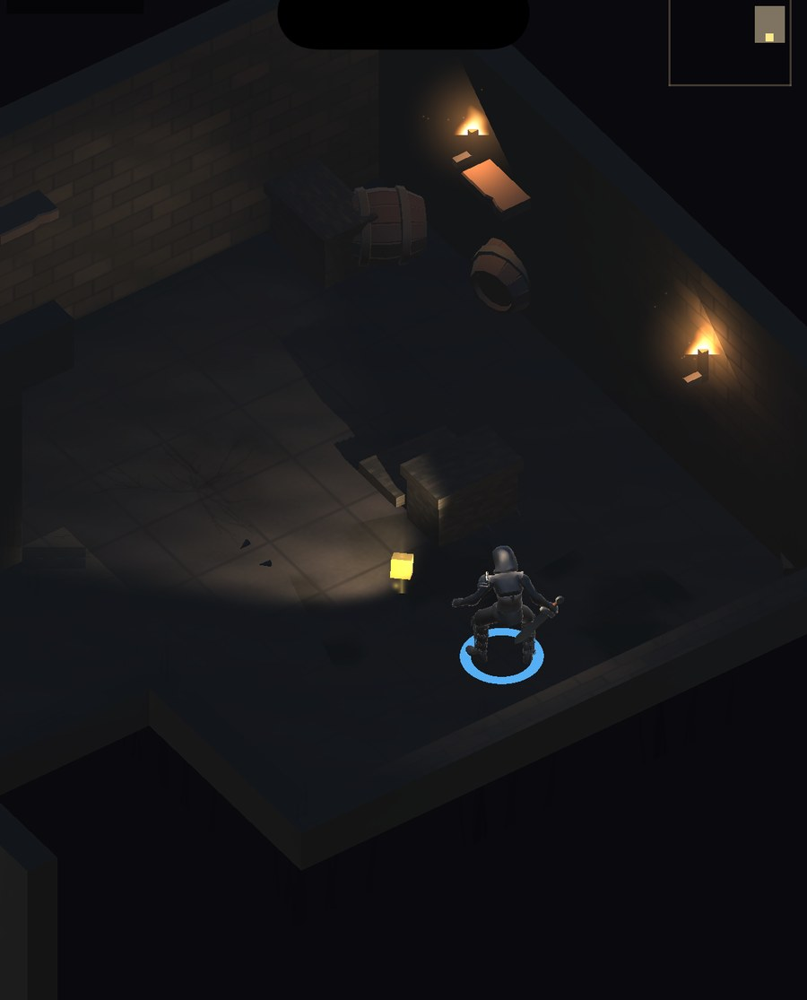
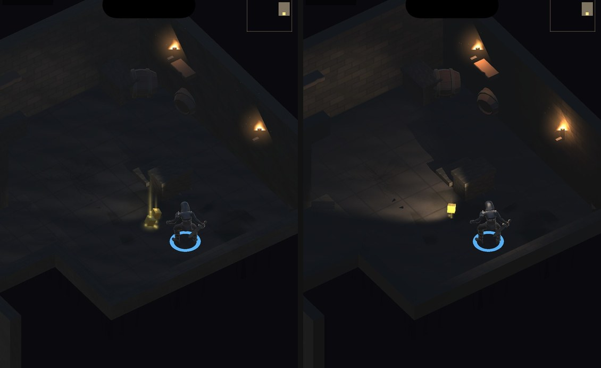

手搓廣告遊戲選集 · 第三款併入
DnD 原本是獨立專案、用 Linear 色彩空間；選集是 Gamma。 兩者的光照數學不同，整套明暗與配色必須重調一輪。


Gamma 下同樣的光照會顯得比 Linear 暗，照理論該把環境光補上去。 第一輪只補到理論值的三分之一，整個房間就全部看得見了—— 地板、遠牆、寶箱、酒桶一覽無遺，視野錐完全失去意義。
而視野錐正是這款的核心設計。把暗處補亮等於把遊戲的可見度機制拆掉。 正確作法是反過來：環境光壓得比原本更低，改成把光源本身拉高 ——要的是對比，不是整體亮度。
| 項目 | Linear 原版 | 第一輪（錯） | 最終 |
|---|---|---|---|
| 環境光 | .016 | .052 | .010 |
| 視野錐 | 3.9 | 4.3 | 9.5 |
| 牆上火把 | 1.15 | 1.55 | 3.6 |
| 火盆 | 1.3 | 1.75 | 3.8 |
Gamma 不會對材質顏色做伽瑪解碼。同一個 .34 的牆面基底色，
在 Linear 下實際參與光照的是 .342.2 = .089，
在 Gamma 下就是 .34——牆面憑空亮了將近四倍。
只調光源救不了中間調偏亮。牆與地的基底色壓成原值的
^1.4 之後，暗部才真正沉下去。
不靠肉眼。拿原版的截圖量出亮部的 RGB 與暖度當目標，每輪重調後量同樣的指標：
| 指標 | 原版（Linear） | 最終（Gamma） |
|---|---|---|
| 亮部 R / G / B | 164 / 118 / 74 | 182 / 138 / 86 |
| 暖度 | 0.76 | 0.71 |
量測方式錯了兩次才對。第一次拿整張截圖的暗部中位當指標， 但參考圖是緊貼遊戲畫面裁切的——取樣範圍不同，數字沒有可比性。 第二次改量亮部色相，藍色分量卻異常偏高，那是玩家腳環與魔力條的亮藍 被算進去了。第三次只取遊戲畫面、排除藍色主導的像素才對等。
對等之後的結論很乾淨：亮度從頭到尾都吻合，真正的差距只有光色的暖度。 如果一開始就量對，中間那兩輪大幅調整根本不需要。
暖度停在 0.71，原版是 0.76。這是成本考量下的停手點，不是達標—— 實際遊玩時看不出來，但數字上還差一點。
效能仍未實機實測。現在三款遊戲在同一個 App 裡， 包體與記憶體都需要一起量。